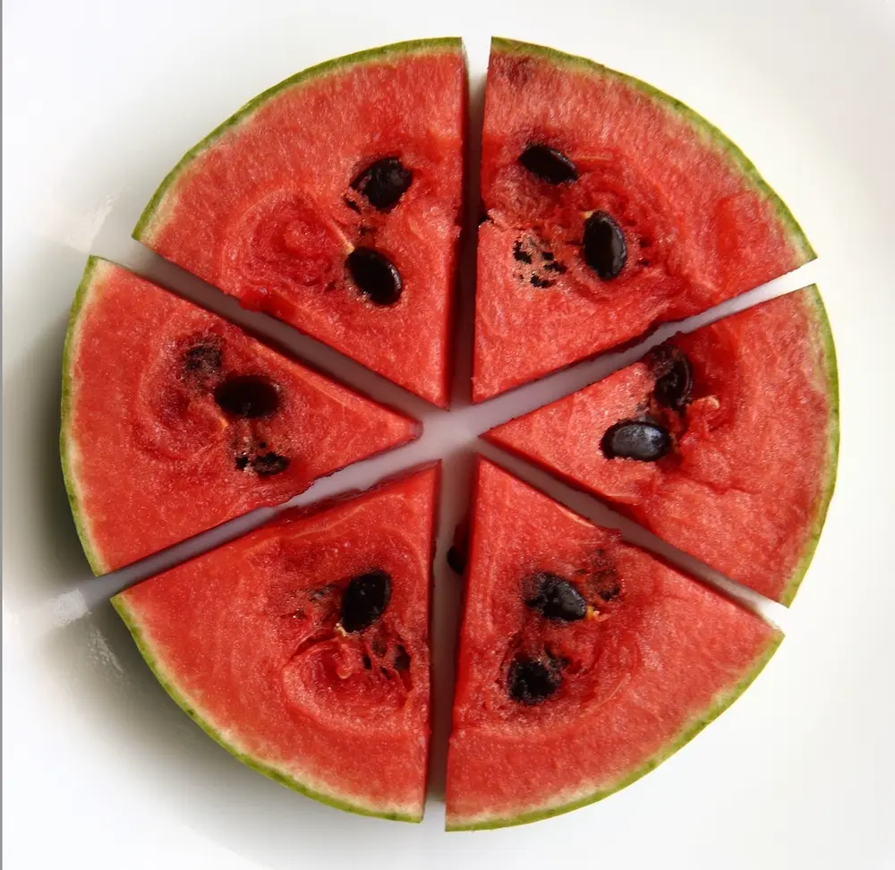
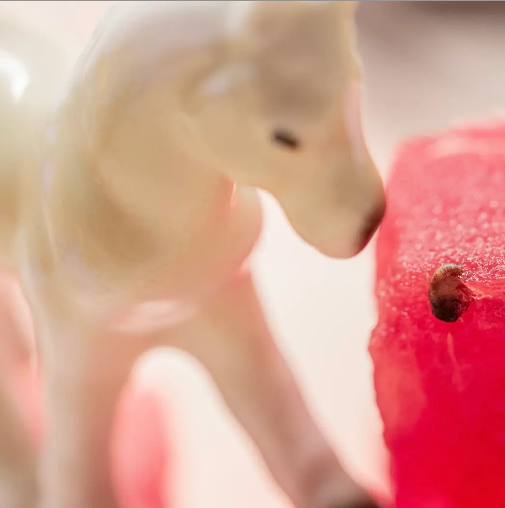
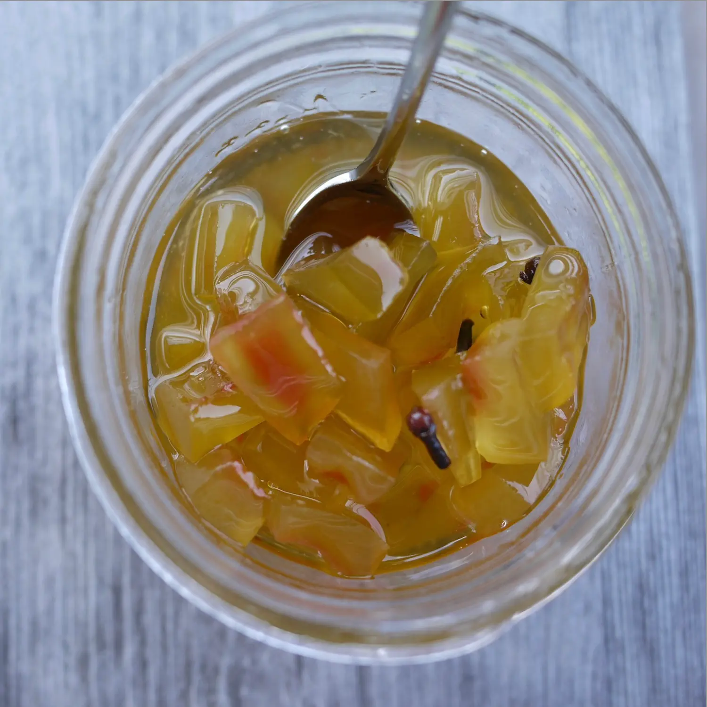
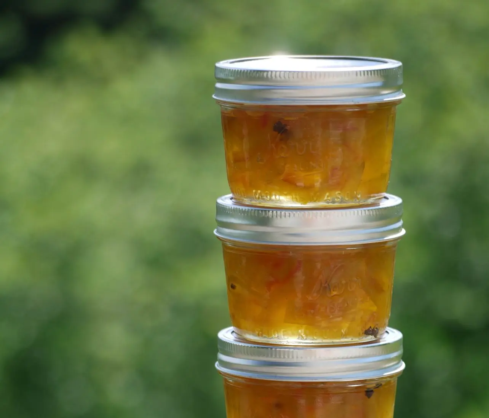

The Health Benefits

How it's made
Start with cutting the rind off the watermelon and removing any pink bits left. Let the rinds sit in boiling water for ~10 minutes. This allows it to soften and hold flavours much better. After we drain it, we are going to plunge them into an ice bath. Now we want to prepare a mixture of spices, salts and sugars with some water and vinegar. This is going to be the smack of flavor. Now we can start packing all our ingredients into a jar, rinds first. Keep the jars sealed and run them under boiling water (~10 minutes) and finally, store it for a week before enjoying that crunch.

Exploring Tastes
The different tastes rinds can bring will shock you. The sweetness of a watermelon extends to the rind. This makes it easy to pair with vinegar and sugars that help flesh out the experience. Adding spices rounds out the flavors. Chili flakes will give it a kick, mustard adds a tangyness that is best appreciated with a sandwich or charcuterie board. Chili flakes for all those spice-crazed lovers will give rinds the kick they need. This adaptability makes for an exciting addition to salads, salsas, and potentially cocktails. This showcases their ability to enhance a variety of dishes.

Recipes That Last
A popular dish is a spicy watermelon rind salsa. Diced rinds are combined with tomatoes, onions, cilantro, and jalapeños. Perfect for anyone to wanting to substitute nachos for that healthy alternative. Another creative option is watermelon rind kimchi. Seasoned with garlic, ginger, and gochugaru. Something for people that have a broader palette. If those aren’t enough try a watermelon rind chutney topped off with cinnamon and cloves, perfect alongside grilled meats or as a spread. The savoury meat along with the sweetness of the chutney should stuff anyone up, consider it for the next Thanksgiving get together.

Our History
Founded in the heart of Edmonton’s Meadows community. PickleMeRind began as a food experiment and quickly became the talk of the neighbourhood. Our grandparents started pickling watermelon rinds to reduce waste and ended up bringing something new to our typical summer plans. Picnics and backyard barbecues have never been the same since. Each jar is made using homegrown ingredients and family recipes that create a lifetime of memories to pass down to newer generations. PickleMeRind aims to bring families together, encouraging them to create their own combinations and figuring out that perfect snack for everyone to enjoy.